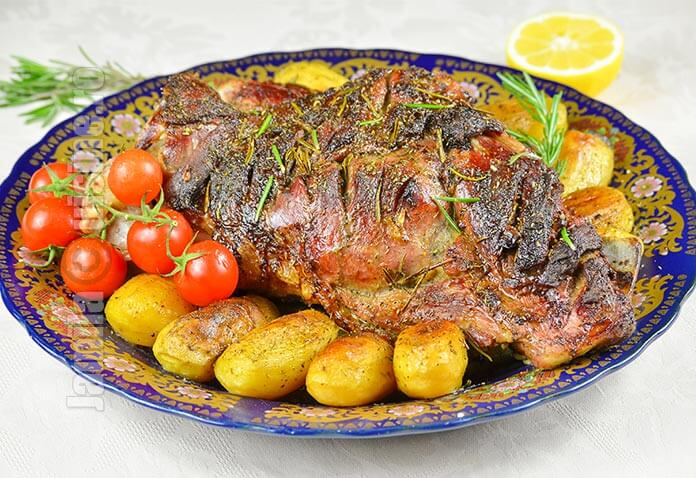

Miel la cuptor

Description
Această rețetă simplă va produce un miel
fraged și suculent, perfect pentru orice ocazie
specială sau pentru o masă de sărbătoare. Poftă bună!
- 1 miel întreg (aproximativ 3-4 kg)
- 4 căței de usturoi, tăiați felii subțiri
- 2-3 crenguțe de cimbru proaspăt
- 2-3 crenguțe de rozmarin proaspăt
- Sare și piper negru măcinat, după gust
- Ulei de măsline, pentru ungere
- Preîncălzește cuptorul la 180°C.
- Fă câteva înțepături în carne și înserează
felii de usturoi în aceste goluri.
- Așează mielul într-o tavă de
copt și unge-l cu ulei de măsline.
- După două ore, înlătură folia de aluminiu și
mai lasă mielul în cuptor timp
de încă 30 de minute sau
până când coaja devine fragedă și auriu închis.